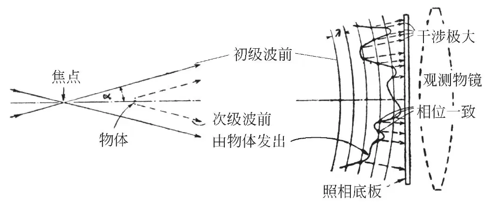

英文
英文盖伯
编者按
丹尼斯·盖伯在完成这篇论文时还是一家大型电子制造企业的一名雇员，表面上这篇论文指导了电子显微镜的改进，而如今，这篇论文业已成为全息摄影技术的原理。这项技术可以将构造三维影像所需的全部信息储存于二维表面中，并已广泛应用于银行和信用卡等设备中。20世纪50年代盖伯进入伦敦帝国学院，并于1971年获得诺贝尔奖。 英文
我们已经知道，电子透镜的球差决定了电子显微镜的分辨率极限约为5埃。虽然人们已经提出建议对物镜进行校正，但是这些都很难实现，而分辨率极限正比于球差的四次方根这一事实使得改进分辨率的希望更为渺茫。也就是说，要将分辨率提高10倍，需要将物镜的校正提高一万倍，这几乎是一项不可能完成的任务。 英文
下面所描述的新的显微原理提供的方法可绕过上述困境，因为它完全无需使用电子物镜。可通过两步处理获得显微图像，即电子分析和随后的光学合成，就像劳伦斯·布拉格爵士的“X射线显微镜”那样。但是“X射线显微镜”只适用于那些预先知道相位的非常特殊的情况，而新原理则在一张图像中提供了振幅和相位的完整记录，因而适用于极其一般的各类物体。 英文
图1是对该原理的一个概括性解释。用一束向细微焦点聚焦后并以半角α发散的电子束照明物体。如果焦点的标称直径或高斯直径小于分辨率极限值λ/2 sin α，就能确保充分的相干性。由照明系统的衍射和球差所决定的物理直径可能还要大得多。物体位于焦点后方（或前方），与焦点相隔很小的一段距离，在其后面比这段距离大很多倍的位置放置照相干板。因而这样的排列方式与电子阴影显微镜类似；但是它可以在阴影显微镜力不能及的范围使用，因为它会产生与初始图像截然不同的图像。物体最好小于物平面中的照明面积，而且必须被固定在一个可透射相当一部分初级波的支架上。通过初级波与物体发出的次级波中的相干部分之间的干涉产生照相记录结果。可以看到，至少在图像靠外的区域中会出现干涉极大，其位置非常接近于图1所示的初级波相位和次级波相位达到一致的位置。 英文

图1．共心照明波与微小物体发出的次级波之间的干涉 英文
如果将照片进行反转处理或者翻印出来，最强的透射位点就代表了初级波（译者注：“初级波”的一部分被用作物体的照明光；另一部分，即其未被物体散射的部分被用作参考光）与修正波（译者注：“修正波”是“初级波”照射在物体上，被物体散射而发生改变的波，也就是“物波”）具有相同相位的区域，而这些位置上透射率的变化将近似正比于修正波的强度变化。因此，如果用电子波的光学模拟去照射照相记录，只有能够同时模拟修正波的相位和振幅的部分初级波才会被强烈透射。可以看出，对最强透射位置之外区域的“掩蔽”只会产生小的扭曲效应。应该可以预期，通过仔细查看这类经过适当处理的图像，我们将会看到它背后的原物体，好像它就在眼前一样。 英文
可用一个光学模型来检验这一原理，即用单色光而不是电子产生干涉图像。将装置中的照片放回原处，背后加一面观测物镜，它允许的入射半角近似为sin α = 0.04，通过一台显微镜观察所形成的图像并最终进行拍照。在图2中可以看到，虽然重现影像并不完美，但是利用相同的光学系统直接观察物体时刚好可以区分的那些字母，在重现影像中也能够被区分。只有中心部分的分辨率明显不足，那是圆框造成了干扰。重现影像的其他不足主要是由用以产生焦点和进行观测的显微镜物镜的瑕疵导致的。 英文
这些图像具有一个引人注目的特性，即它们能像记录平面物体一样地记录三维物体。可以在显微镜中逐一地连续观察延伸物体的不同平面，就好像它们真的在那个位置一样。 英文

图2．（a）原始显微图，直径为1.4毫米。（b）显微图，通过直接照相得到，与重现影像（d）使用相同的光学系统。Ap. 0.04。（c）干涉图，利用从一个焦点发散出来的射线束将显微图投影于照相干板上得到。字母由于衍射而变得模糊。（d）利用光学合成从左侧图像得到的重现影像。以（b）为参照，字母再度由模糊变得清晰。
编者注：图中所使用的三个人名Huygens（惠更斯）、Young（杨）、Fresnel（菲涅耳）代表证明光的波动性的三位重要科学家。 英文
将显微镜经过焦点向另一侧移动，我们会在相对于该焦点中心对称的位置发现原物体的第二个像。对此现象的简要解释是，照相图像无法区分初级波的正相移与负相移，这第二个像与原物体的相移相同，但是符号相反。 英文
如果将该原理应用于电子显微镜，那么在光学合成仪器中的尺度应该按光波对电子波的比值（即大约100,000倍）同比例增加。同时必须提供一个照明系统，它是电子聚焦透镜及其球差的严格光学模拟。为避免图像按比例增大，还必须再引入一个透镜，其焦距等于从电子装置中的照相干板到物体之间的距离，其放置位置应使得从焦点的光学距离看来干板出现在无穷远处。对于这种我们不妨称为“电子干涉显微镜”的新型装置的研究即将展开。 英文
我要感谢威廉姆斯先生在实验中给予的协助，感谢英国汤姆森–休斯敦电气公司研究主管戴维斯先生对这篇短文的公开发表给予允准。 英文
（王耀杨 翻译；熊秉衡 审稿）